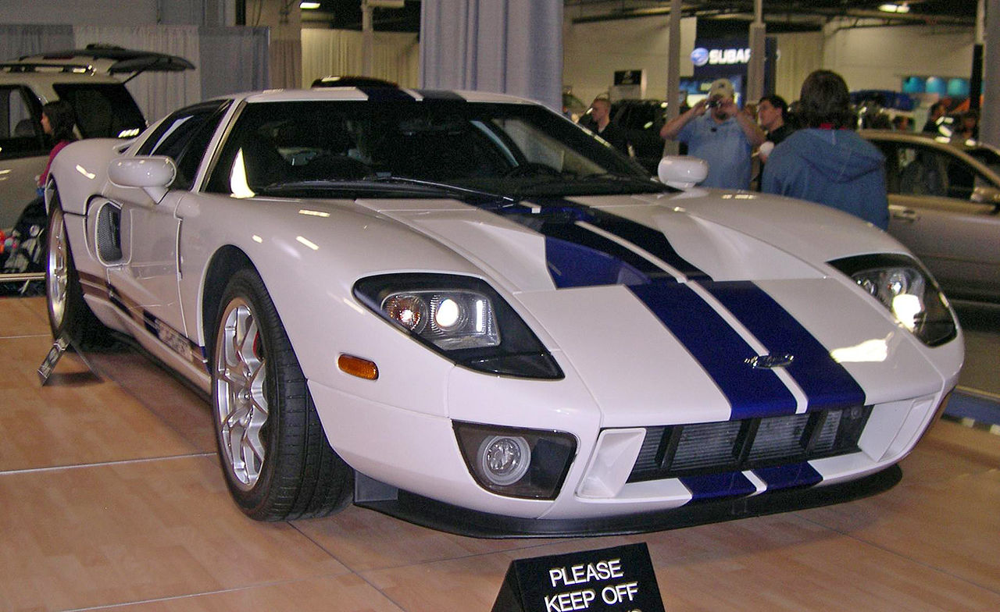

The Ford GT began as a concept car designed in anticipation of the automaker's centennial year and as part of its drive to showcase and revive its "heritage" names such as Mustang and Thunderbird. At the 1995 Detroit Auto Show, the Ford GT90 concept was shown. At the 2002 auto show, Ford unveiled a new GT40 Concept car. Camilo Pardo, the head of Ford's "Living Legends" studio, is credited as the chief designer of the GT and worked under the guidance of J Mays. Carroll Shelby was brought in by Ford to help develop the Ford GT; which included performance testing of the prototype car. While the project was still secret, it was called Petunia. The GT is similar in outward appearance to the original Ford GT40 cars, but bigger, wider, and most importantly 3 in (76 mm) taller than the original 40 in (100 cm); as a result, a potential name for the car was the GT43. Although the cars are visually related, structurally, there is no similarity between the modern GT and the 1960s GT40 that inspired it. Three production prototype cars were shown in 2003 as part of Ford's centenary, and delivery of the production Ford GT began in the fall of 2004. A British company, Safir Engineering, who built continuation GT40s in the 1980s, owned the "GT40" trademark at that time. When they completed production, they sold the excess parts, tooling, design, and trademark to a small Ohio company called Safir GT40 Spares. This company licensed the use of the "GT40" trademark to Ford for the initial 2002 show car. When Ford decided to make the production vehicle, negotiations between the two firms failed. The production cars do not wear the GT40 badge.
 Jiří Hradil 2014